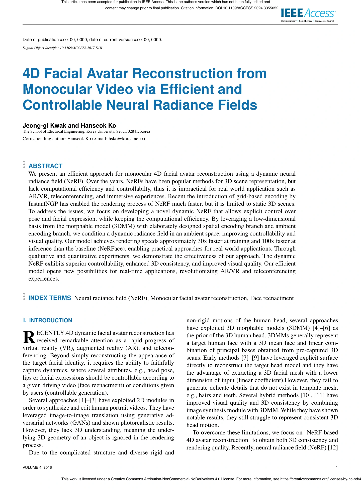
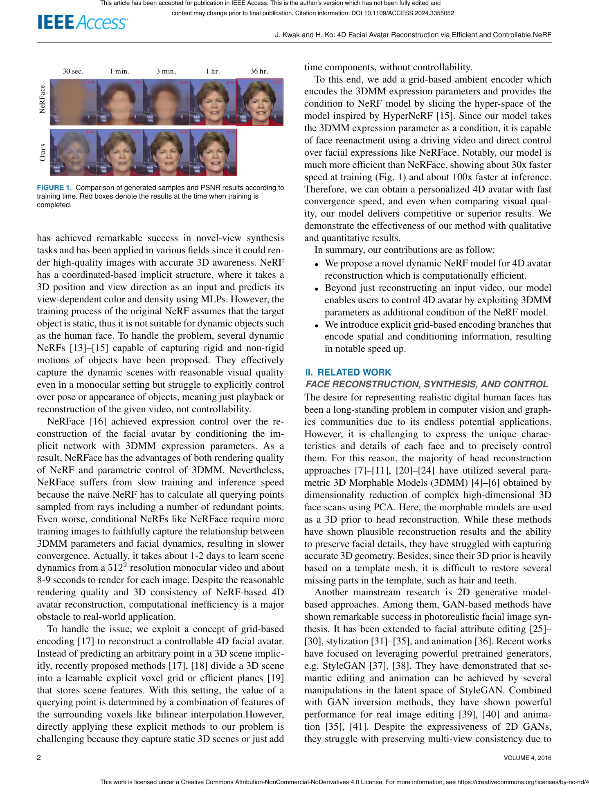
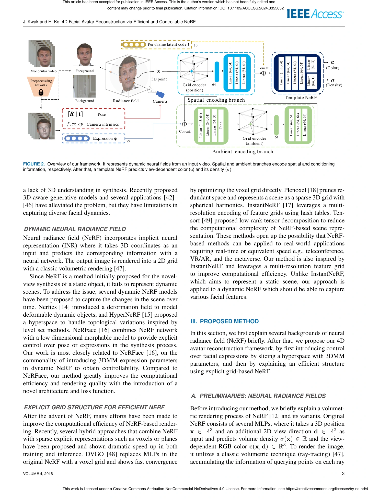
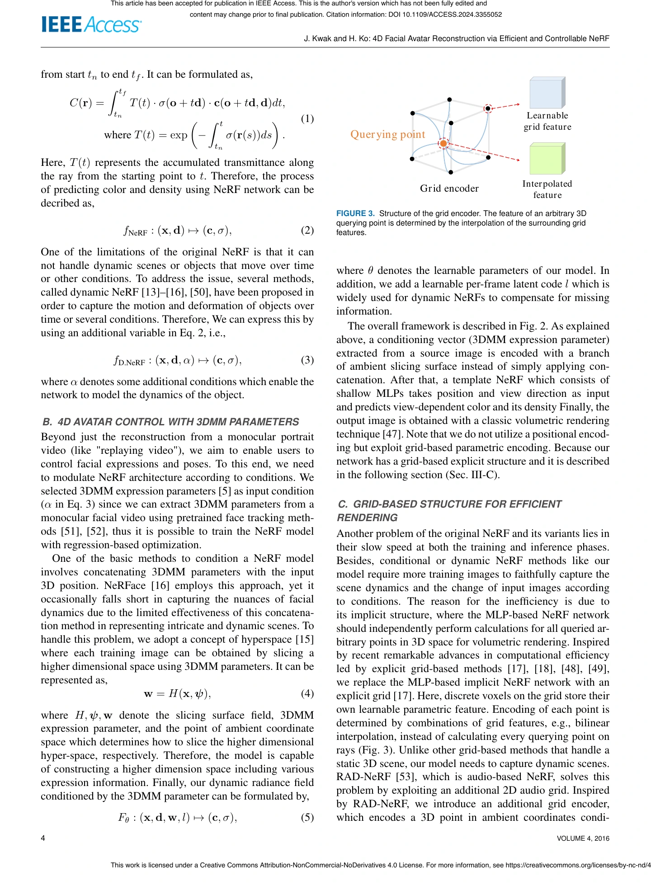
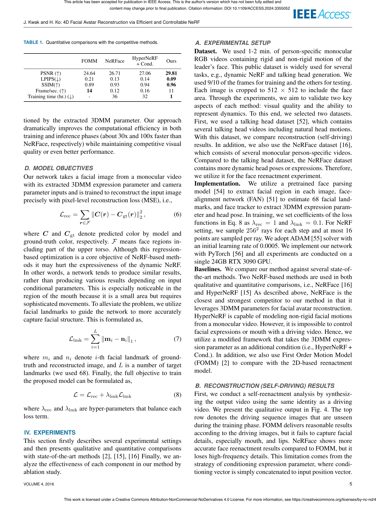
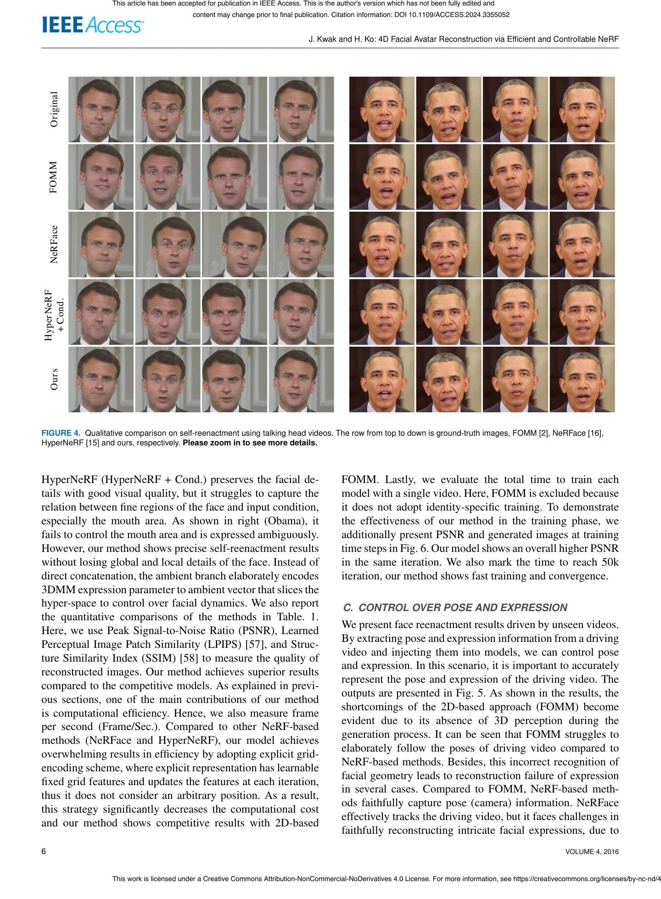
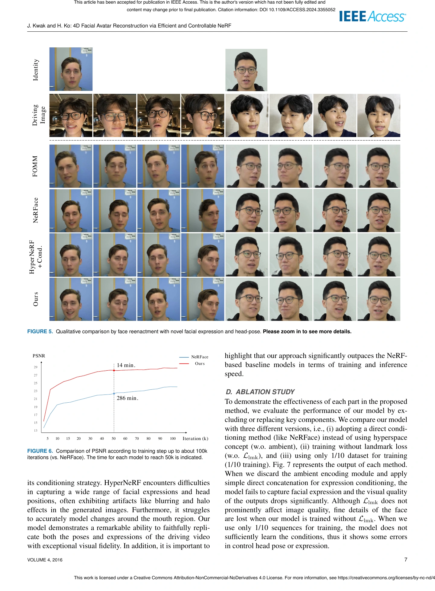
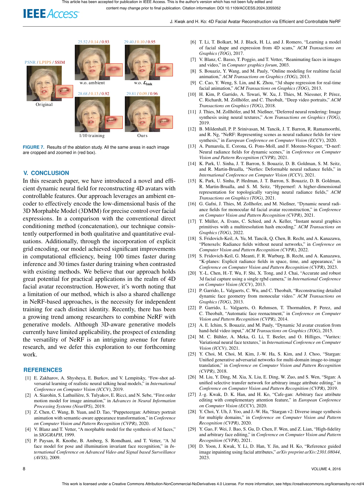
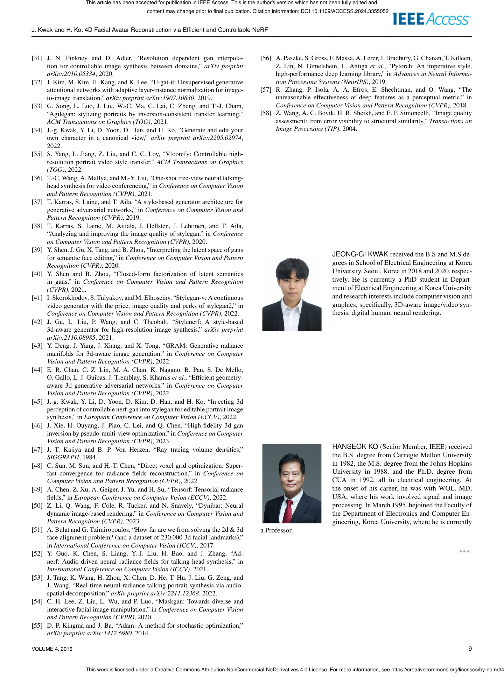

<!doctype html><html lang="ko"><head><meta charset="utf-8"><meta name="viewport" content="width=device-width,initial-scale=1"><title>XRMR-SCR-0005 · 논문 원문 읽기</title><style>*{box-sizing:border-box}body{margin:0;background:#edf1ed;color:#243b36;font:15px/1.8 -apple-system,BlinkMacSystemFont,"Apple SD Gothic Neo",sans-serif}header,main{max-width:1200px;margin:auto;padding:25px}header{background:#fff}h1{font-size:23px;line-height:1.5}h2{font-size:16px}a{color:#236853}nav{display:flex;gap:14px;flex-wrap:wrap}section{scroll-margin:20px;margin:25px 0 45px}img{display:block;width:100%;height:auto;background:white;border:1px solid #d6dfd6}details{background:#fff;padding:12px 18px}summary{cursor:pointer}pre{white-space:pre-wrap;font:13px/1.8 monospace;overflow-wrap:anywhere}.top{display:block;margin:8px 0}small{color:#576b5c}.actions{display:flex;gap:20px;flex-wrap:wrap;margin:15px 0}</style></head><body><header id="top"><small>XRMR-SCR-0005 · 원문 열람 · 9쪽</small><h1>4D Facial Avatar Reconstruction from Monocular Video via Efficient and Controllable Neural Radiance Fields</h1><p>Jeong-gi Kwak · Hanseok Ko, 2024 · DOI <a href="https://doi.org/10.1109/ACCESS.2024.3355052" target="_blank" rel="noopener">10.1109/ACCESS.2024.3355052</a></p><p><strong>논문을 읽은 뒤 검토 작성 탭으로 돌아가 주세요.</strong> 아래 쪽수를 근거 위치에 적으면 됩니다. 브라우저 확대 기능으로 글자를 크게 볼 수 있습니다.</p><p><small>보관된 저자 수락본입니다. 첫 장의 임시 서지 표기는 최종 정보가 아니며, 수락본 안내에 표시된 DOI를 확인하세요. 원본 페이지 전체를 표시한 열람용 이미지입니다. CC BY-NC-ND 4.0 · <a href="https://creativecommons.org/licenses/by-nc-nd/4.0/">라이선스</a>. 자동 추출 텍스트의 수식·표·다단 순서는 이미지와 대조하세요.</small></p><div class="actions"><a href="./XRMR-SCR-0005.pdf" download>원본 PDF 내려받기</a><a href="../#trial">검토 화면으로 이동</a></div><nav aria-label="PDF 쪽수 이동"><a href="#page-1">1쪽</a> <a href="#page-2">2쪽</a> <a href="#page-3">3쪽</a> <a href="#page-4">4쪽</a> <a href="#page-5">5쪽</a> <a href="#page-6">6쪽</a> <a href="#page-7">7쪽</a> <a href="#page-8">8쪽</a> <a href="#page-9">9쪽</a></nav></header><main><section id="page-1"><h2>PDF 1 / 9쪽</h2><details><summary>1쪽 텍스트 보기 · 자동 추출</summary><pre>Date of publication xxxx 00, 0000, date of current version xxxx 00, 0000.
Digital Object Identifier 10.1109/ACCESS.2017.DOI
4D Facial Avatar Reconstruction from
Monocular Video via Efficient and
Controllable Neural Radiance Fields
Jeong-gi Kwak and Hanseok Ko
The School of Electrical Engineering, Korea University, Seoul, 02841, Korea
Corresponding author: Hanseok Ko (e-mail: hsko@korea.ac.kr).
ABSTRACT
We present an efficient approach for monocular 4D facial avatar reconstruction using a dynamic neural
radiance field (NeRF). Over the years, NeRFs have been popular methods for 3D scene representation, but
lack computational efficiency and controllabilty, thus it is impractical for real world application such as
AR/VR, teleconferencing, and immersive experiences. Recent the introduction of grid-based encoding by
InstantNGP has enabled the rendering process of NeRF much faster, but it is limited to static 3D scenes.
To address the issues, we focus on developing a novel dynamic NeRF that allows explicit control over
pose and facial expression, while keeping the computational efficiency. By leveraging a low-dimensional
basis from the morphable model (3DMM) with elaborately designed spatial encoding branch and ambient
encoding branch, we condition a dynamic radiance field in an ambient space, improving controllability and
visual quality. Our model achieves rendering speeds approximately 30x faster at training and 100x faster at
inference than the baseline (NeRFace), enabling practical approaches for real world applications. Through
qualitative and quantitative experiments, we demonstrate the effectiveness of our approach. The dynamic
NeRF exhibits superior controllability, enhanced 3D consistency, and improved visual quality. Our efficient
model opens new possibilities for real-time applications, revolutionizing AR/VR and teleconferencing
experiences.
INDEX TERMS Neural radiance field (NeRF), Monocular facial avatar reconstruction, Face reenactment
I. INTRODUCTION
R
ECENTLY,4D dynamic facial avatar reconstruction has
received remarkable attention as a rapid progress of
virtual reality (VR), augmented reality (AR), and telecon-
ferencing. Beyond simply reconstructing the appearance of
the target facial identity, it requires the ability to faithfully
capture dynamics, where several attributes, e.g., head pose,
lips or facial expressions should be controllable according to
a given driving video (face reenactment) or conditions given
by users (controllable generation).
Several approaches [1]–[3] have exploited 2D modules in
order to synthesize and edit human portrait videos. They have
leveraged image-to-image translation using generative ad-
versarial networks (GANs) and shown photorealistic results.
However, they lack 3D understanding, meaning the under-
lying 3D geometry of an object is ignored in the rendering
process.
Due to the complicated structure and diverse rigid and
non-rigid motions of the human head, several approaches
have exploited 3D morphable models (3DMM) [4]–[6] as
the prior of the 3D human head. 3DMMs generally represent
a target human face with a 3D mean face and linear com-
bination of principal bases obtained from pre-captured 3D
scans. Early methods [7]–[9] have leveraged explicit surface
directly to reconstruct the target head model and they have
the advantage of extracting a 3D facial mesh with a lower
dimension of input (linear coefficient).However, they fail to
generate delicate details that do not exist in template mesh,
e.g., hairs and teeth. Several hybrid methods [10], [11] have
improved visual quality and 3D consistency by combining
image synthesis module with 3DMM. While they have shown
notable results, they still struggle to represent consistent 3D
head motion.
To overcome these limitations, we focus on &quot;NeRF-based
4D avatar reconstruction&quot; to obtain both 3D consistency and
rendering quality. Recently, neural radiance field (NeRF) [12]
VOLUME 4, 2016 1
This article has been accepted for publication in IEEE Access. This is the author&#x27;s version which has not been fully edited and 
content may change prior to final publication. Citation information: DOI 10.1109/ACCESS.2024.3355052
This work is licensed under a Creative Commons Attribution-NonCommercial-NoDerivatives 4.0 License. For more information, see https://creativecommons.org/licenses/by-nc-nd/4.0/</pre></details><a class="top" href="#top">처음으로 ↑</a></section><section id="page-2"><h2>PDF 2 / 9쪽</h2><details><summary>2쪽 텍스트 보기 · 자동 추출</summary><pre>J. Kwak and H. Ko: 4D Facial Avatar Reconstruction via Efficient and Controllable NeRF
Ours
30 sec. 1 min. 3 min. 1 hr. 36 hr.
NeRFace
20.03 22.82 24.38 29.40
13.40 17.54 18.39 23.61 26.85
FIGURE 1. Comparison of generated samples and PSNR results according to
training time. Red boxes denote the results at the time when training is
completed.
has achieved remarkable success in novel-view synthesis
tasks and has been applied in various fields since it could ren-
der high-quality images with accurate 3D awareness. NeRF
has a coordinated-based implicit structure, where it takes a
3D position and view direction as an input and predicts its
view-dependent color and density using MLPs. However, the
training process of the original NeRF assumes that the target
object is static, thus it is not suitable for dynamic objects such
as the human face. To handle the problem, several dynamic
NeRFs [13]–[15] capable of capturing rigid and non-rigid
motions of objects have been proposed. They effectively
capture the dynamic scenes with reasonable visual quality
even in a monocular setting but struggle to explicitly control
over pose or appearance of objects, meaning just playback or
reconstruction of the given video, not controllability.
NeRFace [16] achieved expression control over the re-
construction of the facial avatar by conditioning the im-
plicit network with 3DMM expression parameters. As a
result, NeRFace has the advantages of both rendering quality
of NeRF and parametric control of 3DMM. Nevertheless,
NeRFace suffers from slow training and inference speed
because the naive NeRF has to calculate all querying points
sampled from rays including a number of redundant points.
Even worse, conditional NeRFs like NeRFace require more
training images to faithfully capture the relationship between
3DMM parameters and facial dynamics, resulting in slower
convergence. Actually, it takes about 1-2 days to learn scene
dynamics from a 5122 resolution monocular video and about
8-9 seconds to render for each image. Despite the reasonable
rendering quality and 3D consistency of NeRF-based 4D
avatar reconstruction, computational inefficiency is a major
obstacle to real-world application.
To handle the issue, we exploit a concept of grid-based
encoding [17] to reconstruct a controllable 4D facial avatar.
Instead of predicting an arbitrary point in a 3D scene implic-
itly, recently proposed methods [17], [18] divide a 3D scene
into a learnable explicit voxel grid or efficient planes [19]
that stores scene features. With this setting, the value of a
querying point is determined by a combination of features of
the surrounding voxels like bilinear interpolation.However,
directly applying these explicit methods to our problem is
challenging because they capture static 3D scenes or just add
time components, without controllability.
To this end, we add a grid-based ambient encoder which
encodes the 3DMM expression parameters and provides the
condition to NeRF model by slicing the hyper-space of the
model inspired by HyperNeRF [15]. Since our model takes
the 3DMM expression parameter as a condition, it is capable
of face reenactment using a driving video and direct control
over facial expressions like NeRFace. Notably, our model is
much more efficient than NeRFace, showing about 30x faster
speed at training (Fig. 1) and about 100x faster at inference.
Therefore, we can obtain a personalized 4D avatar with fast
convergence speed, and even when comparing visual qual-
ity, our model delivers competitive or superior results. We
demonstrate the effectiveness of our method with qualitative
and quantitative results.
In summary, our contributions are as follow:
• We propose a novel dynamic NeRF model for 4D avatar
reconstruction which is computationally efficient.
• Beyond just reconstructing an input video, our model
enables users to control 4D avatar by exploiting 3DMM
parameters as additional condition of the NeRF model.
• We introduce explicit grid-based encoding branches that
encode spatial and conditioning information, resulting
in notable speed up.
II. RELATED WORK
FACE RECONSTRUCTION, SYNTHESIS, AND CONTROL
The desire for representing realistic digital human faces has
been a long-standing problem in computer vision and graph-
ics communities due to its endless potential applications.
However, it is challenging to express the unique charac-
teristics and details of each face and to precisely control
them. For this reason, the majority of head reconstruction
approaches [7]–[11], [20]–[24] have utilized several para-
metric 3D Morphable Models (3DMM) [4]–[6] obtained by
dimensionality reduction of complex high-dimensional 3D
face scans using PCA. Here, the morphable models are used
as a 3D prior to head reconstruction. While these methods
have shown plausible reconstruction results and the ability
to preserve facial details, they have struggled with capturing
accurate 3D geometry. Besides, since their 3D prior is heavily
based on a template mesh, it is difficult to restore several
missing parts in the template, such as hair and teeth.
Another mainstream research is 2D generative model-
based approaches. Among them, GAN-based methods have
shown remarkable success in photorealistic facial image syn-
thesis. It has been extended to facial attribute editing [25]–
[30], stylization [31]–[35], and animation [36]. Recent works
have focused on leveraging powerful pretrained generators,
e.g. StyleGAN [37], [38]. They have demonstrated that se-
mantic editing and animation can be achieved by several
manipulations in the latent space of StyleGAN. Combined
with GAN inversion methods, they have shown powerful
performance for real image editing [39], [40] and anima-
tion [35], [41]. Despite the expressiveness of 2D GANs,
they struggle with preserving multi-view consistency due to
2 VOLUME 4, 2016
This article has been accepted for publication in IEEE Access. This is the author&#x27;s version which has not been fully edited and 
content may change prior to final publication. Citation information: DOI 10.1109/ACCESS.2024.3355052
This work is licensed under a Creative Commons Attribution-NonCommercial-NoDerivatives 4.0 License. For more information, see https://creativecommons.org/licenses/by-nc-nd/4.0/</pre></details><a class="top" href="#top">처음으로 ↑</a></section><section id="page-3"><h2>PDF 3 / 9쪽</h2><details><summary>3쪽 텍스트 보기 · 자동 추출</summary><pre>J. Kwak and H. Ko: 4D Facial Avatar Reconstruction via Efficient and Controllable NeRF
Spatial  encoding branch
Preprocessing
network
Expression 𝝍
Pose𝑹 𝒕]
𝑓, 𝑐𝑥, 𝑐𝑦 Camera intrinsics
Foreground
Background Radiance field Camera
𝐱Monocular video
Template NeRF
𝐜
(Color)
𝜎
(Density)
Per-frame latent code 𝒍
3D point
Grid encoder
(position)
Grid encoder
(ambient)
Ambient  encoding branch
Linear (64, 64)
Linear (64, 64)
Linear (64, 64)
Linear (64, 64)
Linear (143, 64)
Tanh
Linear (64, 3)
Linear (64, 64)
Linear (64, 64)
Linear (64, 64)
Linear (64, 64)
Linear (64, 64)
Linear (64, 64)
Linear (138, 64)
⊕
⊕
Concat.
Concat.
Linear 
(64, 3)
Linear 
(64, 1)
79
64
64
10
FIGURE 2. Overview of our framework. It represents dynamic neural fields from an input video. Spatial and ambient branches encode spatial and conditioning
information, respectively. After that, a template NeRF predicts view-dependent color (c) and its density (σ).
a lack of 3D understanding in synthesis. Recently proposed
3D-aware generative models and several applications [42]–
[46] have alleviated the problem, but they have limitations in
capturing diverse facial dynamics.
DYNAMIC NEURAL RADIANCE FIELD
Neural radiance field (NeRF) incorporates implicit neural
representation (INR) where it takes 3D coordinates as an
input and predicts the corresponding information with a
neural network. The output image is rendered into a 2D grid
with a classic volumetric rendering [47].
Since NeRF is a method initially proposed for the novel-
view synthesis of a static object, it fails to represent dynamic
scenes. To address the issue, several dynamic NeRF models
have been proposed to capture the changes in the scene over
time. Nerfies [14] introduced a deformation field to model
deformable dynamic objects, and HyperNeRF [15] proposed
a hyperspace to handle topological variations inspired by
level set methods. NeRFace [16] combines NeRF network
with a low dimensional morphable model to provide explicit
control over pose or expressions in the synthesis process.
Our work is most closely related to NeRFace [16], on the
commonality of introducing 3DMM expression parameters
in dynamic NeRF to obtain controllability. Compared to
NeRFace, our method greatly improves the computational
efficiency and rendering quality with the introduction of a
novel architecture and loss function.
EXPLICIT GRID STRUCTURE FOR EFFICIENT NERF
After the advent of NeRF, many efforts have been made to
improve the computational efficiency of NeRF-based render-
ing. Recently, several hybrid approaches that combine NeRF
with sparse explicit representations such as voxels or planes
have been proposed and shown dramatic speed up in both
training and inference. DVGO [48] replaces MLPs in the
original NeRF with a voxel grid and shows fast convergence
by optimizing the voxel grid directly. Plenoxel [18] prunes re-
dundant space and represents a scene as a sparse 3D grid with
spherical harmonics. InstantNeRF [17] leverages a multi-
resolution encoding of feature grids using hash tables. Ten-
sorf [49] proposed low-rank tensor decomposition to reduce
the computational complexity of NeRF-based scene repre-
sentation. These methods open up the possibility that NeRF-
based methods can be applied to real-world applications
requiring real-time or equivalent speed e.g., teleconference,
VR/AR, and the metaverse. Our method is also inspired by
InstantNeRF and leverages a multi-resolution feature grid
to improve computational efficiency. Unlike InstantNeRF,
which aims to represent a static scene, our approach is
applied to a dynamic NeRF which should be able to capture
various facial features.
III. PROPOSED METHOD
In this section, we first explain several backgrounds of neural
radiance field (NeRF) briefly. After that, we propose our 4D
avatar reconstruction framework, by first introducing control
over facial expressions by slicing a hyperspace with 3DMM
parameters, and then by explaining an efficient structure
using explicit grid-based NeRF.
A. PRELIMINARIES: NEURAL RADIANCE FIELDS
Before introducing our method, we briefly explain a volumet-
ric rendering process of NeRF [12] and its variants. Original
NeRF consists of several MLPs, where it takes a 3D position
x ∈ R3 and an additional 2D view direction d ∈ R2 as
input and predicts volume density σ(x) ∈ R and the view-
dependent RGB color c(x, d) ∈ R3. To render the image,
it utilizes a classic volumetric technique (ray-tracing) [47],
accumulating the information of querying points on each ray
VOLUME 4, 2016 3
This article has been accepted for publication in IEEE Access. This is the author&#x27;s version which has not been fully edited and 
content may change prior to final publication. Citation information: DOI 10.1109/ACCESS.2024.3355052
This work is licensed under a Creative Commons Attribution-NonCommercial-NoDerivatives 4.0 License. For more information, see https://creativecommons.org/licenses/by-nc-nd/4.0/</pre></details><a class="top" href="#top">처음으로 ↑</a></section><section id="page-4"><h2>PDF 4 / 9쪽</h2><details><summary>4쪽 텍스트 보기 · 자동 추출</summary><pre>J. Kwak and H. Ko: 4D Facial Avatar Reconstruction via Efficient and Controllable NeRF
from start tn to end tf . It can be formulated as,
C(r) =
Z tf
tn
T (t) · σ(o + td) · c(o + td, d)dt,
where T (t) = exp

−
Z t
tn
σ(r(s))ds

.
(1)
Here, T (t) represents the accumulated transmittance along
the ray from the starting point to t. Therefore, the process
of predicting color and density using NeRF network can be
decribed as,
fNeRF : (x, d) 7→ (c, σ), (2)
One of the limitations of the original NeRF is that it can
not handle dynamic scenes or objects that move over time
or other conditions. To address the issue, several methods,
called dynamic NeRF [13]–[16], [50], have been proposed in
order to capture the motion and deformation of objects over
time or several conditions. Therefore, We can express this by
using an additional variable in Eq. 2, i.e.,
fD.NeRF : (x, d, α) 7→ (c, σ), (3)
where α denotes some additional conditions which enable the
network to model the dynamics of the object.
B. 4D AVATAR CONTROL WITH 3DMM P ARAMETERS
Beyond just the reconstruction from a monocular portrait
video (like &quot;replaying video&quot;), we aim to enable users to
control facial expressions and poses. To this end, we need
to modulate NeRF architecture according to conditions. We
selected 3DMM expression parameters [5] as input condition
(α in Eq. 3) since we can extract 3DMM parameters from a
monocular facial video using pretrained face tracking meth-
ods [51], [52], thus it is possible to train the NeRF model
with regression-based optimization.
One of the basic methods to condition a NeRF model
involves concatenating 3DMM parameters with the input
3D position. NeRFace [16] employs this approach, yet it
occasionally falls short in capturing the nuances of facial
dynamics due to the limited effectiveness of this concatena-
tion method in representing intricate and dynamic scenes. To
handle this problem, we adopt a concept of hyperspace [15]
where each training image can be obtained by slicing a
higher dimensional space using 3DMM parameters. It can be
represented as,
w = H(x, ψ), (4)
where H, ψ, w denote the slicing surface field, 3DMM
expression parameter, and the point of ambient coordinate
space which determines how to slice the higher dimensional
hyper-space, respectively. Therefore, the model is capable
of constructing a higher dimension space including various
expression information. Finally, our dynamic radiance field
conditioned by the 3DMM parameter can be formulated by,
Fθ : (x, d, w, l) 7→ (c, σ), (5)
Querying point
Learnable 
grid feature
Interpolated
featureGrid encoder
FIGURE 3. Structure of the grid encoder. The feature of an arbitrary 3D
querying point is determined by the interpolation of the surrounding grid
features.
where θ denotes the learnable parameters of our model. In
addition, we add a learnable per-frame latent code l which is
widely used for dynamic NeRFs to compensate for missing
information.
The overall framework is described in Fig. 2. As explained
above, a conditioning vector (3DMM expression parameter)
extracted from a source image is encoded with a branch
of ambient slicing surface instead of simply applying con-
catenation. After that, a template NeRF which consists of
shallow MLPs takes position and view direction as input
and predicts view-dependent color and its density Finally, the
output image is obtained with a classic volumetric rendering
technique [47]. Note that we do not utilize a positional encod-
ing but exploit grid-based parametric encoding. Because our
network has a grid-based explicit structure and it is described
in the following section (Sec. III-C).
C. GRID-BASED STRUCTURE FOR EFFICIENT
RENDERING
Another problem of the original NeRF and its variants lies in
their slow speed at both the training and inference phases.
Besides, conditional or dynamic NeRF methods like our
model require more training images to faithfully capture the
scene dynamics and the change of input images according
to conditions. The reason for the inefficiency is due to
its implicit structure, where the MLP-based NeRF network
should independently perform calculations for all queried ar-
bitrary points in 3D space for volumetric rendering. Inspired
by recent remarkable advances in computational efficiency
led by explicit grid-based methods [17], [18], [48], [49],
we replace the MLP-based implicit NeRF network with an
explicit grid [17]. Here, discrete voxels on the grid store their
own learnable parametric feature. Encoding of each point is
determined by combinations of grid features, e.g., bilinear
interpolation, instead of calculating every querying point on
rays (Fig. 3). Unlike other grid-based methods that handle a
static 3D scene, our model needs to capture dynamic scenes.
RAD-NeRF [53], which is audio-based NeRF, solves this
problem by exploiting an additional 2D audio grid. Inspired
by RAD-NeRF, we introduce an additional grid encoder,
which encodes a 3D point in ambient coordinates condi-
4 VOLUME 4, 2016
This article has been accepted for publication in IEEE Access. This is the author&#x27;s version which has not been fully edited and 
content may change prior to final publication. Citation information: DOI 10.1109/ACCESS.2024.3355052
This work is licensed under a Creative Commons Attribution-NonCommercial-NoDerivatives 4.0 License. For more information, see https://creativecommons.org/licenses/by-nc-nd/4.0/</pre></details><a class="top" href="#top">처음으로 ↑</a></section><section id="page-5"><h2>PDF 5 / 9쪽</h2><details><summary>5쪽 텍스트 보기 · 자동 추출</summary><pre>J. Kwak and H. Ko: 4D Facial Avatar Reconstruction via Efficient and Controllable NeRF
TABLE 1. Quantitative comparisons with the competitive methods.
FOMM NeRFace HyperNeRF
+ Cond. Ours
PSNR (↑) 24.64 26.71 27.06 29.81
LPIPS(↓) 0.21 0.13 0.14 0.09
SSIM(↑) 0.89 0.93 0.94 0.96
Frame/sec. (↑) 14 0.12 0.16 11
Training time (hr.) (↓) - 36 32 1
tioned by the extracted 3DMM parameter. Our approach
dramatically improves the computational efficiency in both
training and inference phases (about 30x and 100x faster than
NeRFace, respectively) while maintaining competitive visual
quality or even better performance.
D. MODEL OBJECTIVES
Our network takes a facial image from a monocular video
with its extracted 3DMM expression parameter and camera
parameter inputs and is trained to reconstruct the input image
precisely with pixel-level reconstruction loss (MSE), i.e.,
Lrec =
X
r∈F
∥C(r) − C gt(r)∥2
2 , (6)
where C and C gt denote predicted color by model and
ground-truth color, respectively. F means face regions in-
cluding part of the upper torso. Although this regression-
based optimization is a core objective of NeRF-based meth-
ods it may hurt the expressiveness of the dynamic NeRF.
In other words, a network tends to produce similar results,
rather than producing various results depending on input
conditional parameters. This is especially noticeable in the
region of the mouth because it is a small area but requires
sophisticated movements. To alleviate the problem, we utilize
facial landmarks to guide the network to more accurately
capture facial structure. This is formulated as,
Llmk =
LX
i=1
∥mi − ni∥1 , (7)
where mi and ni denote i-th facial landmark of ground-
truth and reconstructed image, and L is a number of target
landmarks (we used 68). Finally, the full objective to train
the proposed model can be formulated as,
L = Lrec + λlmkLlmk (8)
where λrec and λlmk are hyper-parameters that balance each
loss term.
IV. EXPERIMENTS
This section firstly describes several experimental settings
and then presents qualitative and quantitative comparisons
with state-of-the-art methods [2], [15], [16] Finally, we an-
alyze the effectiveness of each component in our method by
ablation study.
A. EXPERIMENTAL SETUP
Dataset. We used 1-2 min. of person-specific monocular
RGB videos containing rigid and non-rigid motion of the
leader’s face. This public dataset is widely used for several
tasks, e.g., dynamic NeRF and talking head generation. We
used 9/10 of the frames for training and the others for testing.
Each image is cropped to 512 × 512 to include the face
area. Through the experiments, we aim to validate two key
aspects of each method: visual quality and the ability to
represent dynamics. To this end, we selected two datasets.
First, we used a talking head dataset [52], which contains
several talking head videos including natural head motions.
With this dataset, we compare reconstruction (self-driving)
results. In addition, we also use the NeRFace dataset [16],
which consists of several monocular person-specific videos.
Compared to the talking head dataset, the NeRFace dataset
contains more dynamic head poses or expressions. Therefore,
we utilize it for the face reenactment experiment.
Implementation. We utilize a pretrained face parsing
model [54] to extract facial region in each image, face-
alignment network (FAN) [51] to estimate 68 facial land-
marks, and face tracker to extract 3DMM expression param-
eter and head pose. In training, we set coefficients of the loss
functions in Eq. 8 as λrec = 1 and λlmk = 0 .1. For NeRF
setting, we sample 2562 rays for each step and at most 16
points are sampled per ray. We adopt ADAM [55] solver with
an initial learning rate of 0.0005. We implement our network
with PyTorch [56] and all experiments are conducted on a
single 24GB RTX 3090 GPU.
Baselines. We compare our method against several state-of-
the-art methods. Two NeRF-based methods are used in both
qualitative and quantitative comparisons, i.e., NeRFace [16]
and HyperNeRF [15] As described above, NeRFace is the
closest and strongest competitor to our method in that it
leverages 3DMM parameters for facial avatar reconstruction.
HyperNeRF is capable of modeling non-rigid facial motions
from a monocular video. However, it is impossible to control
facial expressions or mouth with a driving video. Hence, we
utilize a modified framework that takes the 3DMM expres-
sion parameter as an additional condition (i.e., HyperNeRF +
Cond.). In addition, we also use First Order Motion Model
(FOMM) [2] to compare with the 2D-based reenactment
model.
B. RECONSTRUCTION (SELF-DRIVING) RESULTS
First, we conduct a self-reenactment analysis by synthesiz-
ing the output video using the same identity as a driving
video. We present the qualitative output in Fig. 4. The top
row denotes the driving sequence images that are unseen
during the training phase. FOMM delivers reasonable results
according to the driving images, but it fails to capture facial
details, especially mouth, and lips. NeRFace shows more
accurate face reenactment results compared to FOMM, but it
loses high-frequency details. This limitation comes from the
strategy of conditioning expression parameter, where condi-
tioning vector is simply concatenated to input position vector.
VOLUME 4, 2016 5
This article has been accepted for publication in IEEE Access. This is the author&#x27;s version which has not been fully edited and 
content may change prior to final publication. Citation information: DOI 10.1109/ACCESS.2024.3355052
This work is licensed under a Creative Commons Attribution-NonCommercial-NoDerivatives 4.0 License. For more information, see https://creativecommons.org/licenses/by-nc-nd/4.0/</pre></details><a class="top" href="#top">처음으로 ↑</a></section><section id="page-6"><h2>PDF 6 / 9쪽</h2><details><summary>6쪽 텍스트 보기 · 자동 추출</summary><pre>J. Kwak and H. Ko: 4D Facial Avatar Reconstruction via Efficient and Controllable NeRF
Ours OriginalHyperNeRF
+ Cond. NeRFace
 FOMM
FIGURE 4. Qualitative comparison on self-reenactment using talking head videos. The row from top to down is ground-truth images, FOMM [2], NeRFace [16],
HyperNeRF [15] and ours, respectively.Please zoom in to see more details.
HyperNeRF (HyperNeRF + Cond.) preserves the facial de-
tails with good visual quality, but it struggles to capture the
relation between fine regions of the face and input condition,
especially the mouth area. As shown in right (Obama), it
fails to control the mouth area and is expressed ambiguously.
However, our method shows precise self-reenactment results
without losing global and local details of the face. Instead of
direct concatenation, the ambient branch elaborately encodes
3DMM expression parameter to ambient vector that slices the
hyper-space to control over facial dynamics. We also report
the quantitative comparisons of the methods in Table. 1.
Here, we use Peak Signal-to-Noise Ratio (PSNR), Learned
Perceptual Image Patch Similarity (LPIPS) [57], and Struc-
ture Similarity Index (SSIM) [58] to measure the quality of
reconstructed images. Our method achieves superior results
compared to the competitive models. As explained in previ-
ous sections, one of the main contributions of our method
is computational efficiency. Hence, we also measure frame
per second (Frame/Sec.). Compared to other NeRF-based
methods (NeRFace and HyperNeRF), our model achieves
overwhelming results in efficiency by adopting explicit grid-
encoding scheme, where explicit representation has learnable
fixed grid features and updates the features at each iteration,
thus it does not consider an arbitrary position. As a result,
this strategy significantly decreases the computational cost
and our method shows competitive results with 2D-based
FOMM. Lastly, we evaluate the total time to train each
model with a single video. Here, FOMM is excluded because
it does not adopt identity-specific training. To demonstrate
the effectiveness of our method in the training phase, we
additionally present PSNR and generated images at training
time steps in Fig. 6. Our model shows an overall higher PSNR
in the same iteration. We also mark the time to reach 50k
iteration, our method shows fast training and convergence.
C. CONTROL OVER POSE AND EXPRESSION
We present face reenactment results driven by unseen videos.
By extracting pose and expression information from a driving
video and injecting them into models, we can control pose
and expression. In this scenario, it is important to accurately
represent the pose and expression of the driving video. The
outputs are presented in Fig. 5. As shown in the results, the
shortcomings of the 2D-based approach (FOMM) become
evident due to its absence of 3D perception during the
generation process. It can be seen that FOMM struggles to
elaborately follow the poses of driving video compared to
NeRF-based methods. Besides, this incorrect recognition of
facial geometry leads to reconstruction failure of expression
in several cases. Compared to FOMM, NeRF-based meth-
ods faithfully capture pose (camera) information. NeRFace
effectively tracks the driving video, but it faces challenges in
faithfully reconstructing intricate facial expressions, due to
6 VOLUME 4, 2016
This article has been accepted for publication in IEEE Access. This is the author&#x27;s version which has not been fully edited and 
content may change prior to final publication. Citation information: DOI 10.1109/ACCESS.2024.3355052
This work is licensed under a Creative Commons Attribution-NonCommercial-NoDerivatives 4.0 License. For more information, see https://creativecommons.org/licenses/by-nc-nd/4.0/</pre></details><a class="top" href="#top">처음으로 ↑</a></section><section id="page-7"><h2>PDF 7 / 9쪽</h2><details><summary>7쪽 텍스트 보기 · 자동 추출</summary><pre>J. Kwak and H. Ko: 4D Facial Avatar Reconstruction via Efficient and Controllable NeRF
Ours Driving 
Image
HyperNeRF
+ Cond. NeRFace
 FOMM
 Identity
FIGURE 5. Qualitative comparison by face reenactment with novel facial expression and head-pose.Please zoom in to see more details.
13
15
17
19
21
23
25
27
29
PSNR
Iteration (k)5       10       15       20        30        40        50        60        70        80        90        100            
14 min.
286 min.
Ours
NeRFace
FIGURE 6. Comparison of PSNR according to training step up to about 100k
iterations (vs. NeRFace). The time for each model to reach 50k is indicated.
its conditioning strategy. HyperNeRF encounters difficulties
in capturing a wide range of facial expressions and head
positions, often exhibiting artifacts like blurring and halo
effects in the generated images. Furthermore, it struggles
to accurately model changes around the mouth region. Our
model demonstrates a remarkable ability to faithfully repli-
cate both the poses and expressions of the driving video
with exceptional visual fidelity. In addition, it is important to
highlight that our approach significantly outpaces the NeRF-
based baseline models in terms of training and inference
speed.
D. ABLATION STUDY
To demonstrate the effectiveness of each part in the proposed
method, we evaluate the performance of our model by ex-
cluding or replacing key components. We compare our model
with three different versions, i.e., (i) adopting a direct condi-
tioning method (like NeRFace) instead of using hyperspace
concept (w.o. ambient), (ii) training without landmark loss
(w.o. Llmk), and (iii) using only 1/10 dataset for training
(1/10 training). Fig. 7 represents the output of each method.
When we discard the ambient encoding module and apply
simple direct concatenation for expression conditioning, the
model fails to capture facial expression and the visual quality
of the outputs drops significantly. Although Llmk does not
prominently affect image quality, fine details of the face
are lost when our model is trained without Llmk. When we
use only 1/10 sequences for training, the model does not
sufficiently learn the conditions, thus it shows some errors
in control head pose or expression.
VOLUME 4, 2016 7
This article has been accepted for publication in IEEE Access. This is the author&#x27;s version which has not been fully edited and 
content may change prior to final publication. Citation information: DOI 10.1109/ACCESS.2024.3355052
This work is licensed under a Creative Commons Attribution-NonCommercial-NoDerivatives 4.0 License. For more information, see https://creativecommons.org/licenses/by-nc-nd/4.0/</pre></details><a class="top" href="#top">처음으로 ↑</a></section><section id="page-8"><h2>PDF 8 / 9쪽</h2><details><summary>8쪽 텍스트 보기 · 자동 추출</summary><pre>J. Kwak and H. Ko: 4D Facial Avatar Reconstruction via Efficient and Controllable NeRF
Original
w.o. ambient 
1/10 training
PSNR / LPIPS / SSIM
Ours
w.o. 𝓛𝐥𝐦𝐤
29.81 / 0.09 / 0.96
25.52 / 0.14 / 0.93
28.68 / 0.13 / 0.92
29.40 / 0.10 / 0.95
FIGURE 7. Results of the ablation study. All the same areas in each image
are cropped and zoomed in (red box).
V. CONCLUSION
In this research paper, we have introduced a novel and effi-
cient dynamic neural field for reconstructing 4D avatars with
controllable features. Our approach leverages an ambient en-
coder to effectively encode the low-dimensional basis of the
3D Morphable Model (3DMM) for precise control over facial
expressions. In a comparison with the conventional direct
conditioning method (concatenation), our technique consis-
tently outperformed in both qualitative and quantitative eval-
uations. Additionally, through the incorporation of explicit
grid encoding, our model achieved significant improvements
in computational efficiency, being 100 times faster during
inference and 30 times faster during training when contrasted
with existing methods. We believe that our approach holds
great potential for practical applications in the realm of 4D
facial avatar reconstruction. However, it’s worth noting that
a limitation of our method, which is also a shared challenge
in NeRF-based approaches, is the necessity for independent
training for each distinct identity. Recently, there has been
a growing trend among researchers to combine NeRF with
generative models. Although 3D-aware generative models
currently have limited applicability, the prospect of extending
the versatility of NeRF is an intriguing avenue for future
research, and we defer this exploration to our forthcoming
work.
REFERENCES
[1] E. Zakharov, A. Shysheya, E. Burkov, and V . Lempitsky, “Few-shot ad-
versarial learning of realistic neural talking head models,” inInternational
Conference on Computer Vision (ICCV), 2019.
[2] A. Siarohin, S. Lathuilière, S. Tulyakov, E. Ricci, and N. Sebe, “First order
motion model for image animation,” in Advances in Neural Information
Processing Systems (NeurIPS), 2019.
[3] Z. Chen, C. Wang, B. Yuan, and D. Tao, “Puppeteergan: Arbitrary portrait
animation with semantic-aware appearance transformation,” inConference
on Computer Vision and Pattern Recognition (CVPR), 2020.
[4] V . Blanz and T. Vetter, “A morphable model for the synthesis of 3d faces,”
in SIGGRAPH, 1999.
[5] P. Paysan, R. Knothe, B. Amberg, S. Romdhani, and T. Vetter, “A 3d
face model for pose and illumination invariant face recognition,” in In-
ternational Conference on Advanced Video and Signal based Surveillance
(AVSS), 2009.
[6] T. Li, T. Bolkart, M. J. Black, H. Li, and J. Romero, “Learning a model
of facial shape and expression from 4D scans,” ACM Transactions on
Graphics (TOG), 2017.
[7] V . Blanz, C. Basso, T. Poggio, and T. Vetter, “Reanimating faces in images
and video,” inComputer graphics forum, 2003.
[8] S. Bouaziz, Y . Wang, and M. Pauly, “Online modeling for realtime facial
animation,”ACM Transactions on Graphics (TOG), 2013.
[9] C. Cao, Y . Weng, S. Lin, and K. Zhou, “3d shape regression for real-time
facial animation,”ACM Transactions on Graphics (TOG), 2013.
[10] H. Kim, P. Garrido, A. Tewari, W. Xu, J. Thies, M. Niessner, P. Pérez,
C. Richardt, M. Zollhöfer, and C. Theobalt, “Deep video portraits,” ACM
Transactions on Graphics (TOG), 2018.
[11] J. Thies, M. Zollhöfer, and M. Nießner, “Deferred neural rendering: Image
synthesis using neural textures,” Acm Transactions on Graphics (TOG) ,
2019.
[12] B. Mildenhall, P. P. Srinivasan, M. Tancik, J. T. Barron, R. Ramamoorthi,
and R. Ng, “NeRF: Representing scenes as neural radiance fields for view
synthesis,” inEuropean Conference on Computer Vision (ECCV), 2020.
[13] A. Pumarola, E. Corona, G. Pons-Moll, and F. Moreno-Noguer, “D-nerf:
Neural radiance fields for dynamic scenes,” in Conference on Computer
Vision and Pattern Recognition (CVPR), 2021.
[14] K. Park, U. Sinha, J. T. Barron, S. Bouaziz, D. B. Goldman, S. M. Seitz,
and R. Martin-Brualla, “Nerfies: Deformable neural radiance fields,” in
International Conference on Computer Vision (ICCV), 2021.
[15] K. Park, U. Sinha, P. Hedman, J. T. Barron, S. Bouaziz, D. B. Goldman,
R. Martin-Brualla, and S. M. Seitz, “Hypernerf: A higher-dimensional
representation for topologically varying neural radiance fields,” ACM
Transactions on Graphics (TOG), 2021.
[16] G. Gafni, J. Thies, M. Zollhofer, and M. Nießner, “Dynamic neural radi-
ance fields for monocular 4d facial avatar reconstruction,” in Conference
on Computer Vision and Pattern Recognition (CVPR), 2021.
[17] T. Müller, A. Evans, C. Schied, and A. Keller, “Instant neural graphics
primitives with a multiresolution hash encoding,” ACM Transactions on
Graphics (TOG), 2022.
[18] S. Fridovich-Keil, A. Yu, M. Tancik, Q. Chen, B. Recht, and A. Kanazawa,
“Plenoxels: Radiance fields without neural networks,” in Conference on
Computer Vision and Pattern Recognition (CVPR), 2022.
[19] S. Fridovich-Keil, G. Meanti, F. R. Warburg, B. Recht, and A. Kanazawa,
“K-planes: Explicit radiance fields in space, time, and appearance,” in
Conference on Computer Vision and Pattern Recognition (CVPR), 2023.
[20] Y .-L. Chen, H.-T. Wu, F. Shi, X. Tong, and J. Chai, “Accurate and robust
3d facial capture using a single rgbd camera,” inInternational Conference
on Computer Vision (ICCV), 2013.
[21] P. Garrido, L. Valgaerts, C. Wu, and C. Theobalt, “Reconstructing detailed
dynamic face geometry from monocular video.” ACM Transactions on
Graphics (TOG), 2013.
[22] P. Garrido, L. Valgaerts, O. Rehmsen, T. Thormahlen, P. Perez, and
C. Theobalt, “Automatic face reenactment,” in Conference on Computer
Vision and Pattern Recognition (CVPR), 2014.
[23] A. E. Ichim, S. Bouaziz, and M. Pauly, “Dynamic 3d avatar creation from
hand-held video input,”ACM Transactions on Graphics (TOG), 2015.
[24] M. C. Bühler, A. Meka, G. Li, T. Beeler, and O. Hilliges, “Varitex:
Variational neural face textures,” inInternational Conference on Computer
Vision (ICCV), 2021.
[25] Y . Choi, M. Choi, M. Kim, J.-W. Ha, S. Kim, and J. Choo, “Stargan:
Unified generative adversarial networks for multi-domain image-to-image
translation,” in Conference on Computer Vision and Pattern Recognition
(CVPR), 2018.
[26] M. Liu, Y . Ding, M. Xia, X. Liu, E. Ding, W. Zuo, and S. Wen, “Stgan: A
unified selective transfer network for arbitrary image attribute editing,” in
Conference on Computer Vision and Pattern Recognition (CVPR), 2019.
[27] J.-g. Kwak, D. K. Han, and H. Ko, “Cafe-gan: Arbitrary face attribute
editing with complementary attention feature,” in European Conference
on Computer Vision (ECCV), 2020.
[28] Y . Choi, Y . Uh, J. Yoo, and J.-W. Ha, “Stargan v2: Diverse image synthesis
for multiple domains,” in Conference on Computer Vision and Pattern
Recognition (CVPR), 2020.
[29] Y . Gao, F. Wei, J. Bao, S. Gu, D. Chen, F. Wen, and Z. Lian, “High-fidelity
and arbitrary face editing,” inConference on Computer Vision and Pattern
Recognition (CVPR), 2021.
[30] D. Yoon, J. Kwak, Y . Li, D. Han, Y . Jin, and H. Ko, “Reference guided
image inpainting using facial attributes,”arXiv preprint arXiv:2301.08044,
2023.
8 VOLUME 4, 2016
This article has been accepted for publication in IEEE Access. This is the author&#x27;s version which has not been fully edited and 
content may change prior to final publication. Citation information: DOI 10.1109/ACCESS.2024.3355052
This work is licensed under a Creative Commons Attribution-NonCommercial-NoDerivatives 4.0 License. For more information, see https://creativecommons.org/licenses/by-nc-nd/4.0/</pre></details><a class="top" href="#top">처음으로 ↑</a></section><section id="page-9"><h2>PDF 9 / 9쪽</h2><details><summary>9쪽 텍스트 보기 · 자동 추출</summary><pre>J. Kwak and H. Ko: 4D Facial Avatar Reconstruction via Efficient and Controllable NeRF
[31] J. N. Pinkney and D. Adler, “Resolution dependent gan interpola-
tion for controllable image synthesis between domains,” arXiv preprint
arXiv:2010.05334, 2020.
[32] J. Kim, M. Kim, H. Kang, and K. Lee, “U-gat-it: Unsupervised generative
attentional networks with adaptive layer-instance normalization for image-
to-image translation,”arXiv preprint arXiv:1907.10830, 2019.
[33] G. Song, L. Luo, J. Liu, W.-C. Ma, C. Lai, C. Zheng, and T.-J. Cham,
“Agilegan: stylizing portraits by inversion-consistent transfer learning,”
ACM Transactions on Graphics (TOG), 2021.
[34] J.-g. Kwak, Y . Li, D. Yoon, D. Han, and H. Ko, “Generate and edit your
own character in a canonical view,” arXiv preprint arXiv:2205.02974 ,
2022.
[35] S. Yang, L. Jiang, Z. Liu, and C. C. Loy, “Vtoonify: Controllable high-
resolution portrait video style transfer,” ACM Transactions on Graphics
(TOG), 2022.
[36] T.-C. Wang, A. Mallya, and M.-Y . Liu, “One-shot free-view neural talking-
head synthesis for video conferencing,” inConference on Computer Vision
and Pattern Recognition (CVPR), 2021.
[37] T. Karras, S. Laine, and T. Aila, “A style-based generator architecture for
generative adversarial networks,” in Conference on Computer Vision and
Pattern Recognition (CVPR), 2019.
[38] T. Karras, S. Laine, M. Aittala, J. Hellsten, J. Lehtinen, and T. Aila,
“Analyzing and improving the image quality of stylegan,” in Conference
on Computer Vision and Pattern Recognition (CVPR), 2020.
[39] Y . Shen, J. Gu, X. Tang, and B. Zhou, “Interpreting the latent space of gans
for semantic face editing,” in Conference on Computer Vision and Pattern
Recognition (CVPR), 2020.
[40] Y . Shen and B. Zhou, “Closed-form factorization of latent semantics
in gans,” in Conference on Computer Vision and Pattern Recognition
(CVPR), 2021.
[41] I. Skorokhodov, S. Tulyakov, and M. Elhoseiny, “Stylegan-v: A continuous
video generator with the price, image quality and perks of stylegan2,” in
Conference on Computer Vision and Pattern Recognition (CVPR), 2022.
[42] J. Gu, L. Liu, P. Wang, and C. Theobalt, “Stylenerf: A style-based
3d-aware generator for high-resolution image synthesis,” arXiv preprint
arXiv:2110.08985, 2021.
[43] Y . Deng, J. Yang, J. Xiang, and X. Tong, “GRAM: Generative radiance
manifolds for 3d-aware image generation,” in Conference on Computer
Vision and Pattern Recognition (CVPR), 2022.
[44] E. R. Chan, C. Z. Lin, M. A. Chan, K. Nagano, B. Pan, S. De Mello,
O. Gallo, L. J. Guibas, J. Tremblay, S. Khamis et al., “Efficient geometry-
aware 3d generative adversarial networks,” in Conference on Computer
Vision and Pattern Recognition (CVPR), 2022.
[45] J.-g. Kwak, Y . Li, D. Yoon, D. Kim, D. Han, and H. Ko, “Injecting 3d
perception of controllable nerf-gan into stylegan for editable portrait image
synthesis,” inEuropean Conference on Computer Vision (ECCV), 2022.
[46] J. Xie, H. Ouyang, J. Piao, C. Lei, and Q. Chen, “High-fidelity 3d gan
inversion by pseudo-multi-view optimization,” inConference on Computer
Vision and Pattern Recognition (CVPR), 2023.
[47] J. T. Kajiya and B. P. V on Herzen, “Ray tracing volume densities,”
SIGGRAPH, 1984.
[48] C. Sun, M. Sun, and H.-T. Chen, “Direct voxel grid optimization: Super-
fast convergence for radiance fields reconstruction,” in Conference on
Computer Vision and Pattern Recognition (CVPR), 2022.
[49] A. Chen, Z. Xu, A. Geiger, J. Yu, and H. Su, “Tensorf: Tensorial radiance
fields,” inEuropean Conference on Computer Vision (ECCV), 2022.
[50] Z. Li, Q. Wang, F. Cole, R. Tucker, and N. Snavely, “Dynibar: Neural
dynamic image-based rendering,” in Conference on Computer Vision and
Pattern Recognition (CVPR), 2023.
[51] A. Bulat and G. Tzimiropoulos, “How far are we from solving the 2d &amp; 3d
face alignment problem? (and a dataset of 230,000 3d facial landmarks),”
in International Conference on Computer Vision (ICCV), 2017.
[52] Y . Guo, K. Chen, S. Liang, Y .-J. Liu, H. Bao, and J. Zhang, “Ad-
nerf: Audio driven neural radiance fields for talking head synthesis,” in
International Conference on Computer Vision (ICCV), 2021.
[53] J. Tang, K. Wang, H. Zhou, X. Chen, D. He, T. Hu, J. Liu, G. Zeng, and
J. Wang, “Real-time neural radiance talking portrait synthesis via audio-
spatial decomposition,”arXiv preprint arXiv:2211.12368, 2022.
[54] C.-H. Lee, Z. Liu, L. Wu, and P. Luo, “Maskgan: Towards diverse and
interactive facial image manipulation,” inConference on Computer Vision
and Pattern Recognition (CVPR), 2020.
[55] D. P. Kingma and J. Ba, “Adam: A method for stochastic optimization,”
arXiv preprint arXiv:1412.6980, 2014.
[56] A. Paszke, S. Gross, F. Massa, A. Lerer, J. Bradbury, G. Chanan, T. Killeen,
Z. Lin, N. Gimelshein, L. Antiga et al. , “Pytorch: An imperative style,
high-performance deep learning library,” in Advances in Neural Informa-
tion Processing Systems (NeurIPS), 2019.
[57] R. Zhang, P. Isola, A. A. Efros, E. Shechtman, and O. Wang, “The
unreasonable effectiveness of deep features as a perceptual metric,” in
Conference on Computer Vision and Pattern Recognition (CVPR), 2018.
[58] Z. Wang, A. C. Bovik, H. R. Sheikh, and E. P. Simoncelli, “Image quality
assessment: from error visibility to structural similarity,” Transactions on
Image Processing (TIP), 2004.
JEONG-GI KWAK received the B.S and M.S de-
grees in School of Electrical Engineering at Korea
University, Seoul, Korea in 2018 and 2020, respec-
tively. He is currently a PhD student in Depart-
ment of Electrical Engineering at Korea University
and research interests include computer vision and
graphics, specifically, 3D-aware image/video syn-
thesis, digital human, neural rendering.
HANSEOK KO (Senior Member, IEEE) received
the B.S. degree from Carnegie Mellon University
in 1982, the M.S. degree from the Johns Hopkins
University in 1988, and the Ph.D. degree from
CUA in 1992, all in electrical engineering. At
the onset of his career, he was with WOL, MD,
USA, where his work involved signal and image
processing. In March 1995, hejoined the Faculty of
the Department of Electronics and Computer En-
gineering, Korea University, where he is currently
a Professor.
VOLUME 4, 2016 9
This article has been accepted for publication in IEEE Access. This is the author&#x27;s version which has not been fully edited and 
content may change prior to final publication. Citation information: DOI 10.1109/ACCESS.2024.3355052
This work is licensed under a Creative Commons Attribution-NonCommercial-NoDerivatives 4.0 License. For more information, see https://creativecommons.org/licenses/by-nc-nd/4.0/</pre></details><a class="top" href="#top">처음으로 ↑</a></section></main></body></html>